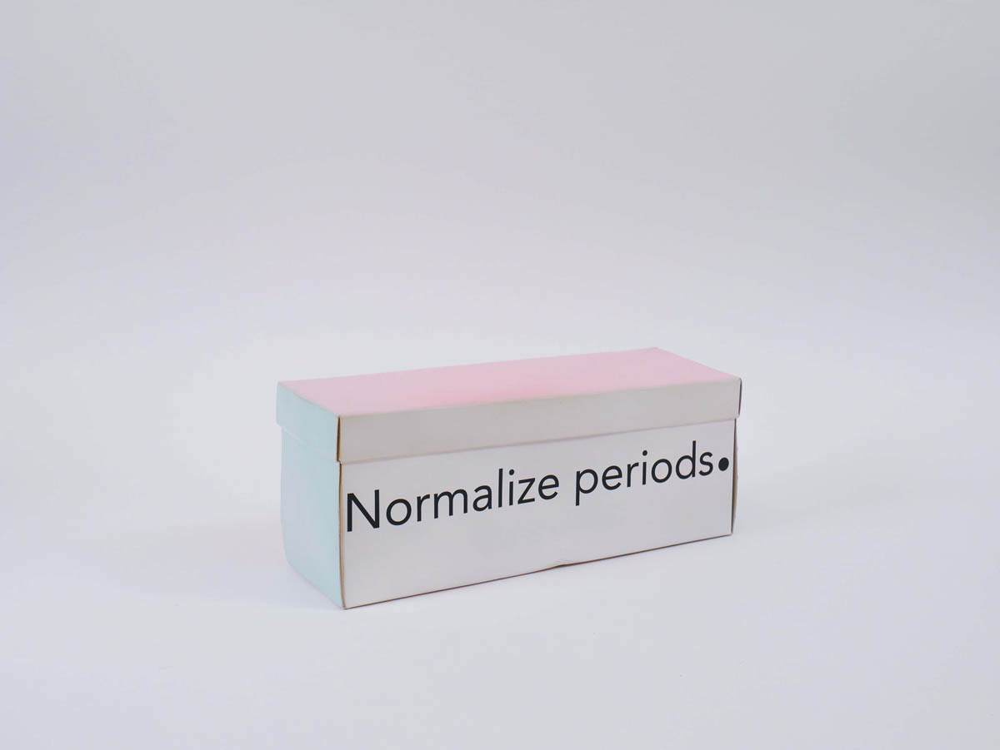

Normalize Periods
Normalize Periods is a packaging design concept for a “period survival kit” intended to promote the normalization and destigmatization of menstruation. I used a color palette of blue, pink, white, and black, intentionally using opposites of traditionally masculine and feminine colors and black and white. The design uses contrast for an overall clean and minimal design befitting sanitary products. The kit includes journals for users to track their cycles, wipes, and three different degrees of tampons for light, regular, and heavy days. This project consists of branding and packaging design.
